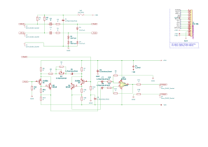
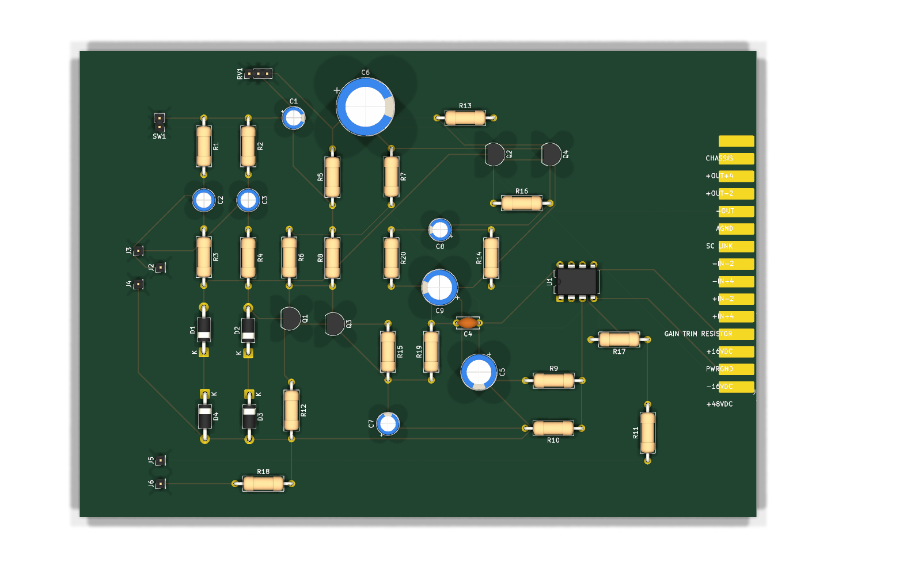
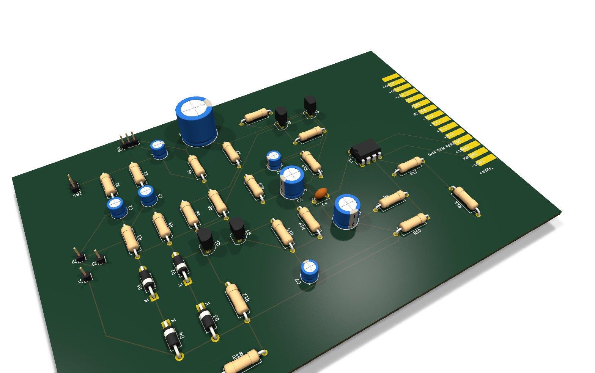
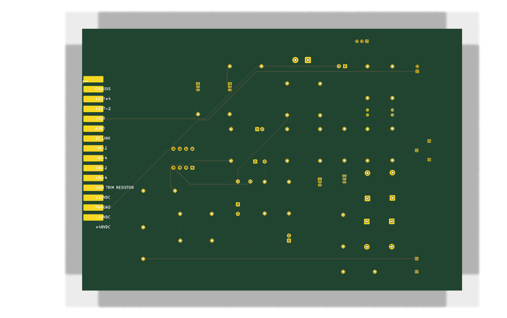
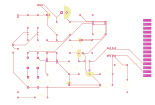
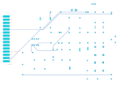

Practical — 08
Design files
The KiCad schematics and boards, exported straight from the repository so they can be read, printed or downloaded without KiCad.
Exported from Pre-Amp at 5e6a308
(2026-09-18) with KiCad 10.0.6. These are snapshots: the repository is the source, and
build/export_kicad.py regenerates this page when it changes.
Schematics
The preamp schematic
Series-500.kicad_sch. The PDF has every sheet;
download it.

Boards
The preamp card
| Count | |
|---|---|
| Footprints | 46 |
| Track segments | 156 |
| Vias | 0 |
| Copper pours | 0 |





Every layer, one per page: preamp-layers.pdf.